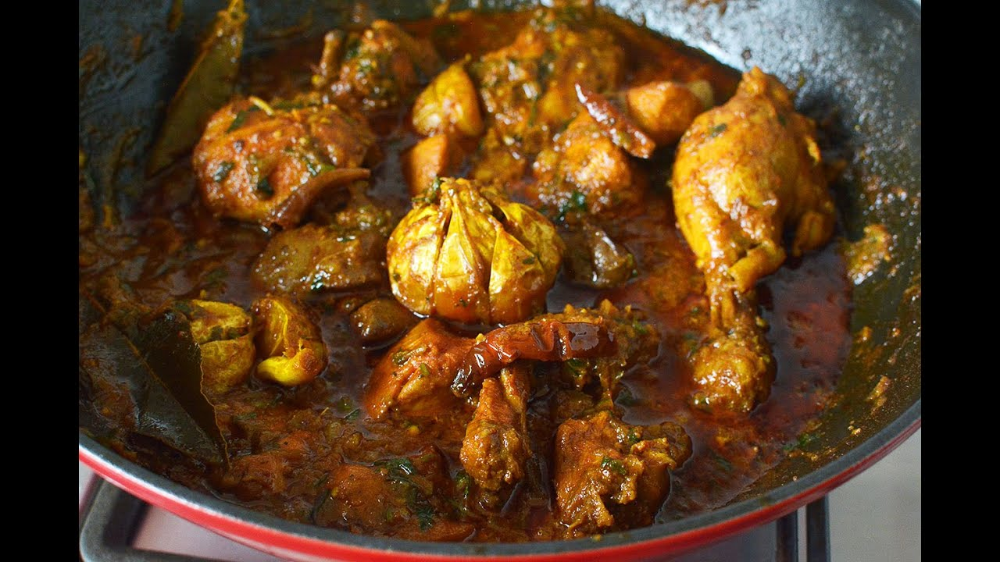
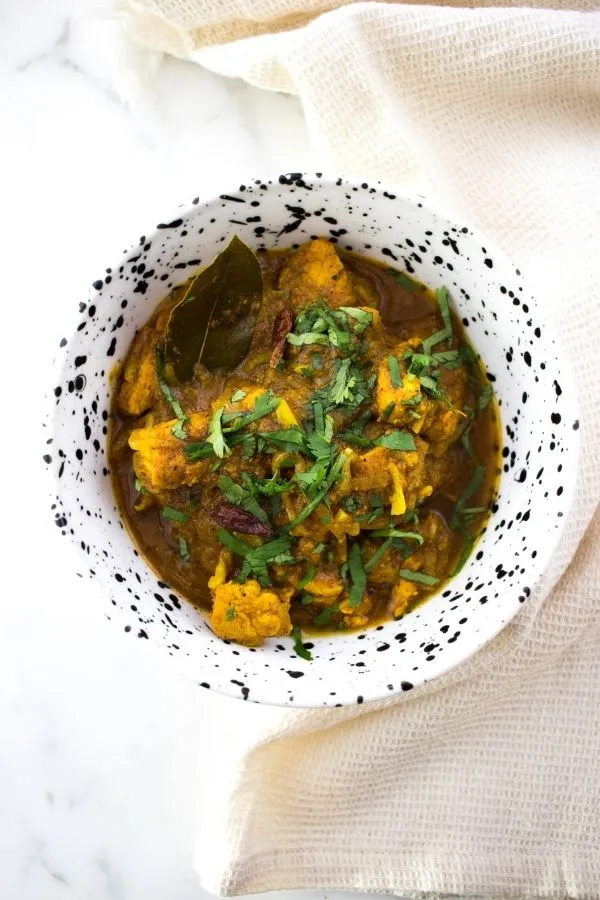
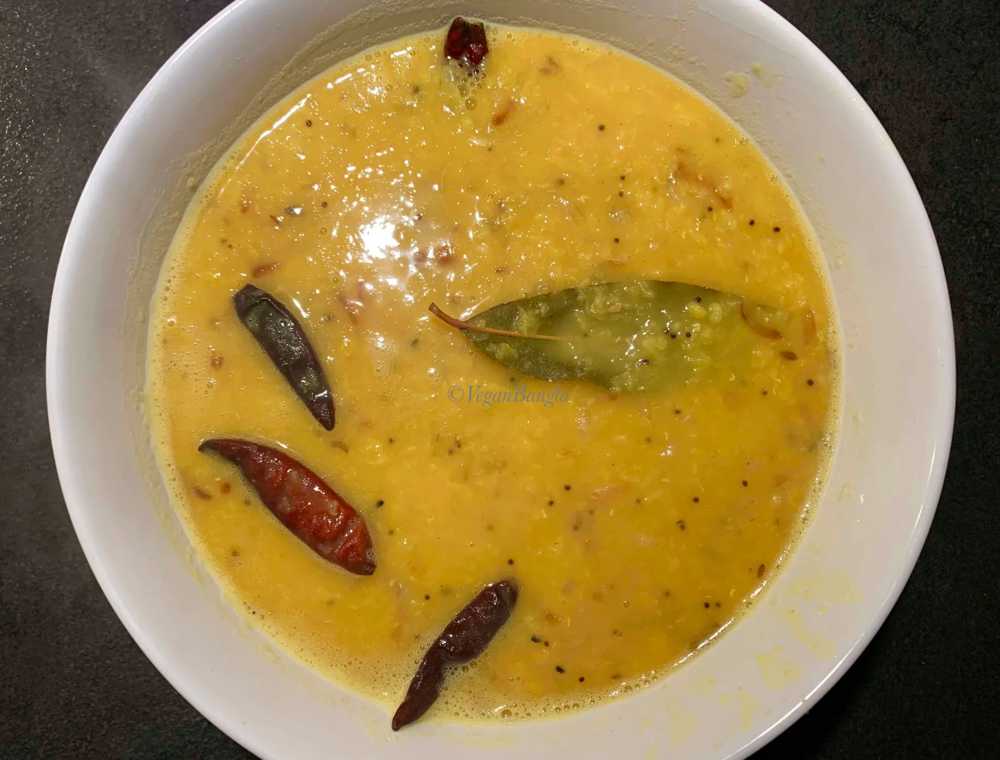
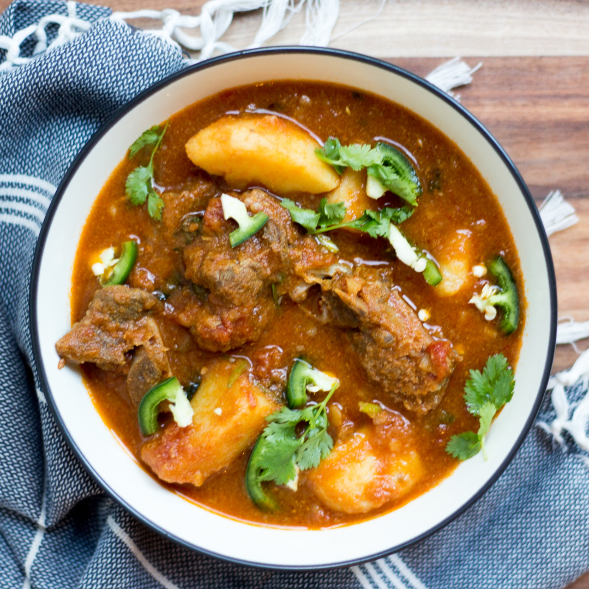
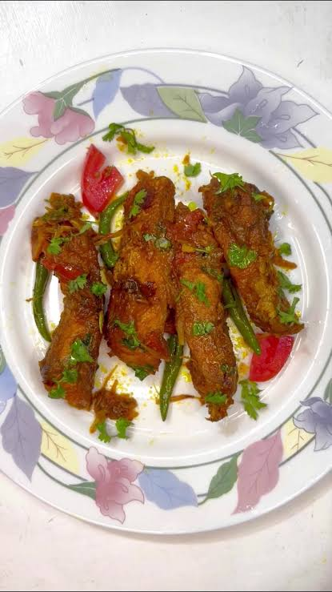
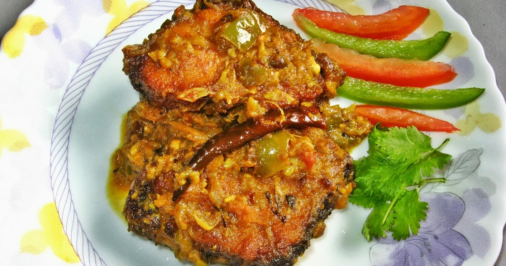
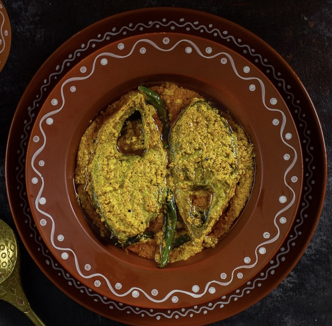
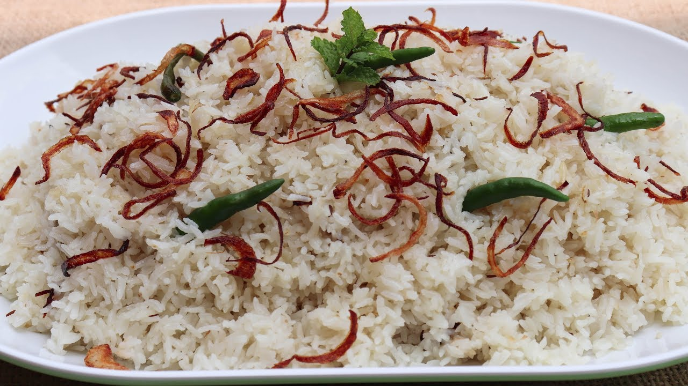

THE MIDDAY EDIT
Lunch Options
Lunches already in your recipe book, with the matching original dish photos, prep times and links to complete instructions. Search to find what you want to cook.

Classic Gramer Murgi
Village-style chicken curry, great with rice or roti.

Chakma-Style Chicken Curry
A traditional chicken dish for flavourful lunch leftovers.

Mediterranean Chickpea Salad
Chickpeas and vegetables for an easy midday meal.

Avocado Toast
A light, no-fuss lunch you can prepare in minutes.

Classic Bangladeshi Daal
A simple one-pot option with rice or bread.

Bengali Beef Curry
Slow-cooked and satisfying; choose certified halal beef.

Faakibaji Fish Curry
A fast fish curry with rice or vegetables.

Bengali Rui Fish Curry
A classic fish lunch, best with steamed rice.

Shorshe Ilish
Mustard-based hilsa for a traditional lunch.

Plain Pulao (Sada Polao)
Pair with any curry for a balanced plate.
No matching lunches found.
These photos use the images already paired to these exact recipes in this website. Lunch recipes are not represented as official HelloFresh recipes. Check meat and sauce labels for halal suitability.